每一个中国孩子，无论身处北上广深，还是大山深处的乡村小学， 都应该拥有一样好的学习资源。
一线城市的孩子可以购买成套教辅、上价格高昂的补习班；偏远地区的孩子，往往连一本配套练习册都难以获得。 ChinaStudyFree 希望借助 AI 的力量，把这件事改变一点点。
以上为资源覆盖统计，不代表所有题目已通过教师逐题审核。
题目形式生动、即时反馈，让孩子在闯关与互动中建立对知识的兴趣。
跟着课本章节走，学完一课就能练；答错回炉重练，进度条只在答对时前进。
概念、公式与易错点讲解，部分课程仍在持续补齐。
语文 / 英语课文逐句朗读，支持跟读练习，并展示课本原页。
浏览器内录音与回放，录音不上传；需要 HTTPS 与麦克风授权。
每单元配 AI 分级故事与阅读理解题，并附儿童插画配图。
题目、选项、知识讲解与故事文本都可以朗读，随点随听。
当前浏览器保存完成情况、正确率与阅读星级，随时接着上次继续。
连续答对触发连击动画与语音激励，让每一道题都有反馈。
错题复习、每日目标、本周报告，以及家长可设的每日学习时长限制。
教材结构引用自开源项目 TapXWorld/ChinaTextbook；单元练习与课外故事由 AI 生成并持续修订。
| 学科 | 版本 | 年级 | 课外故事 |
|---|---|---|---|
| 语文 | 统编版 | 一至六年级 | 188 篇 |
| 英语 | 人教版 PEP | 三至六年级 | 96 篇 |
| 数学 | 人教版 | 一至六年级 | — |
| 科学 | 教科版 | 一至六年级 | — |
电脑使用侧栏与宽屏阅读布局，手机使用底部导航与单列阅读。以下均为实际运行截图，点击可放大。
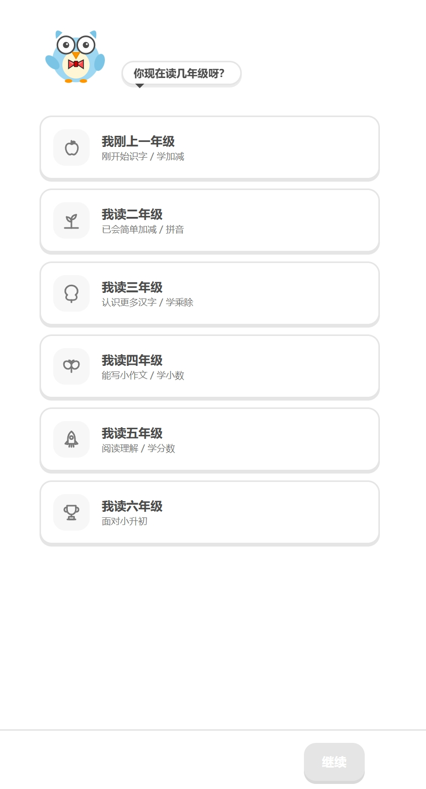
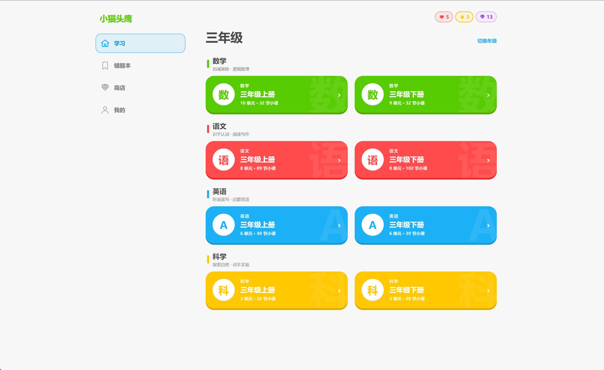
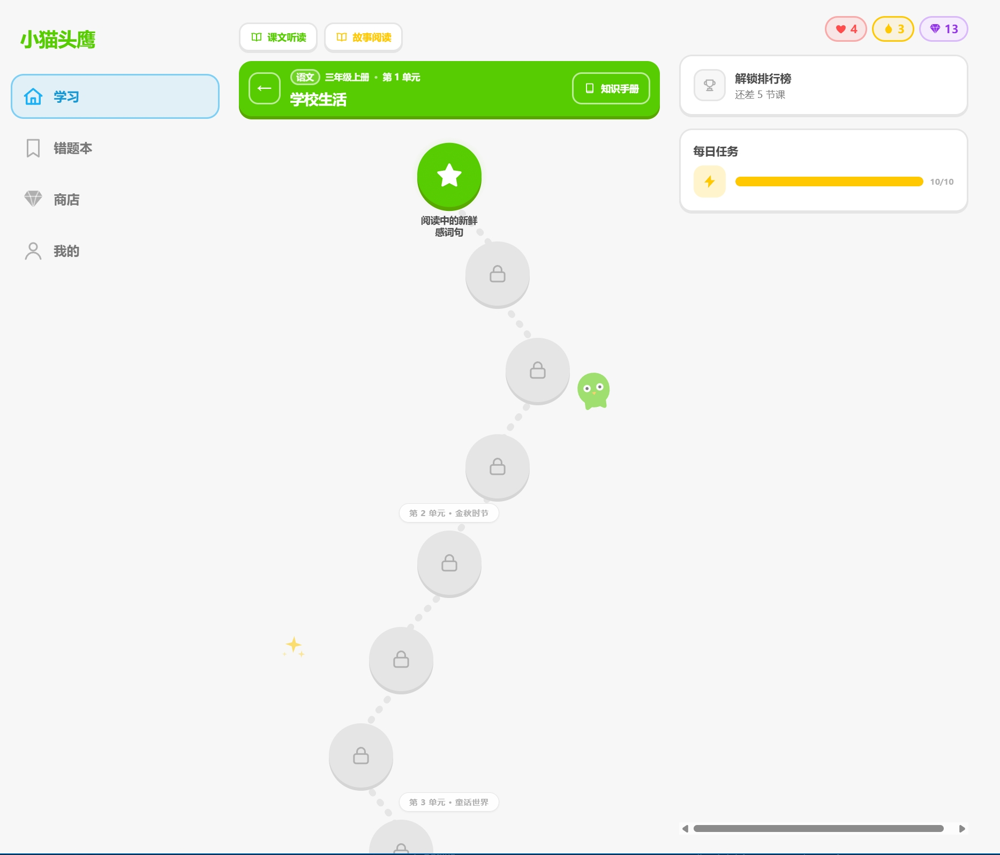
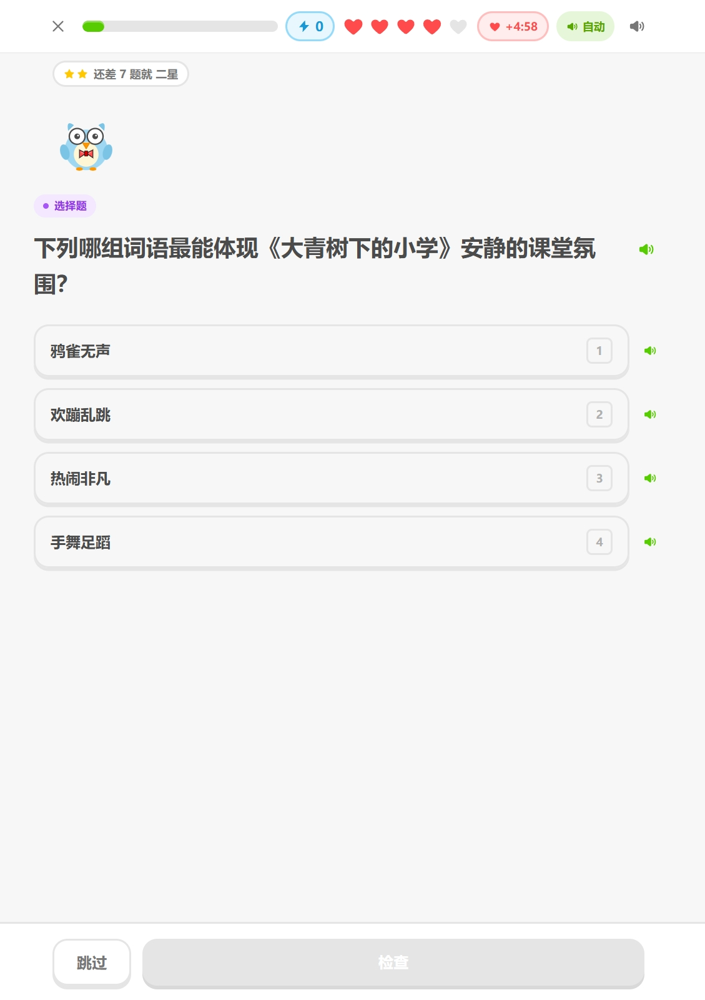
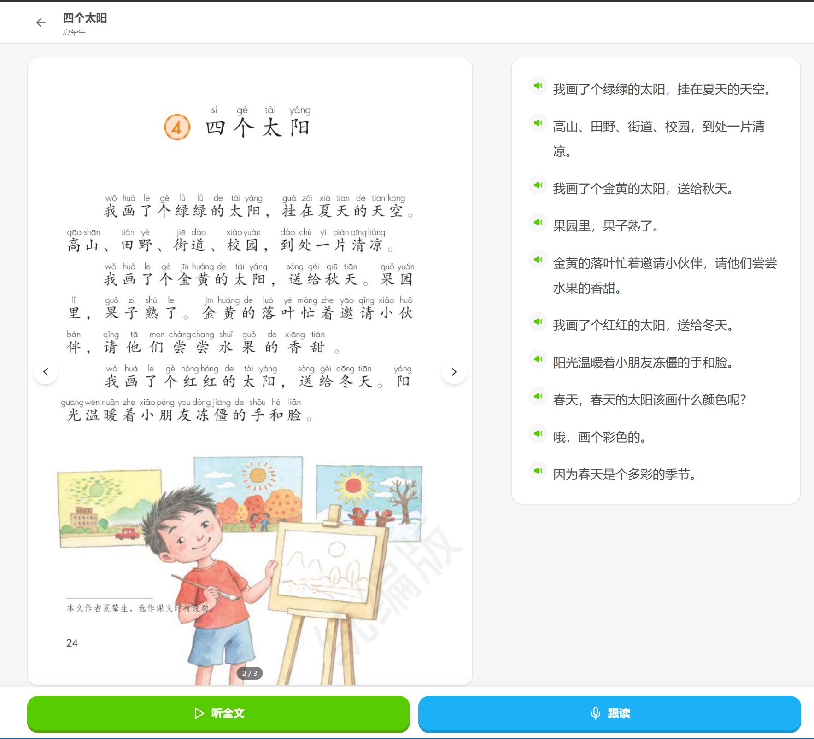
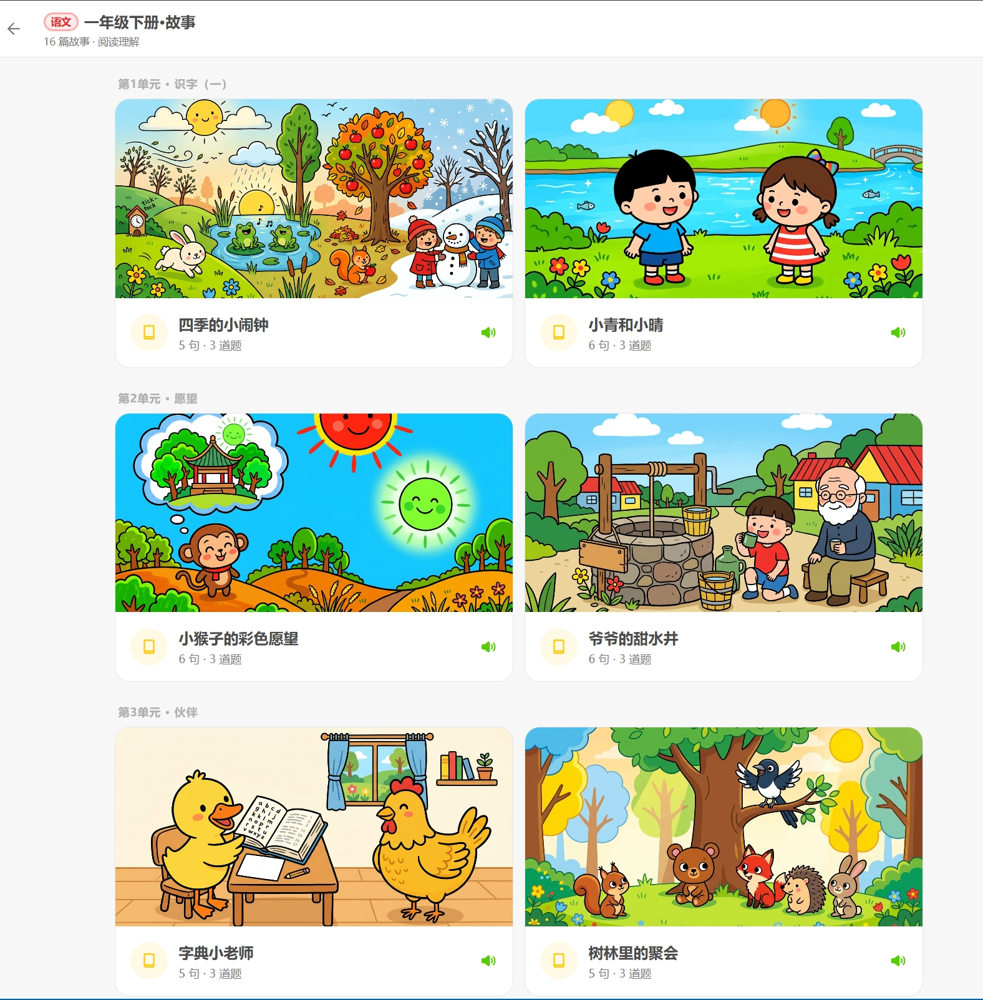
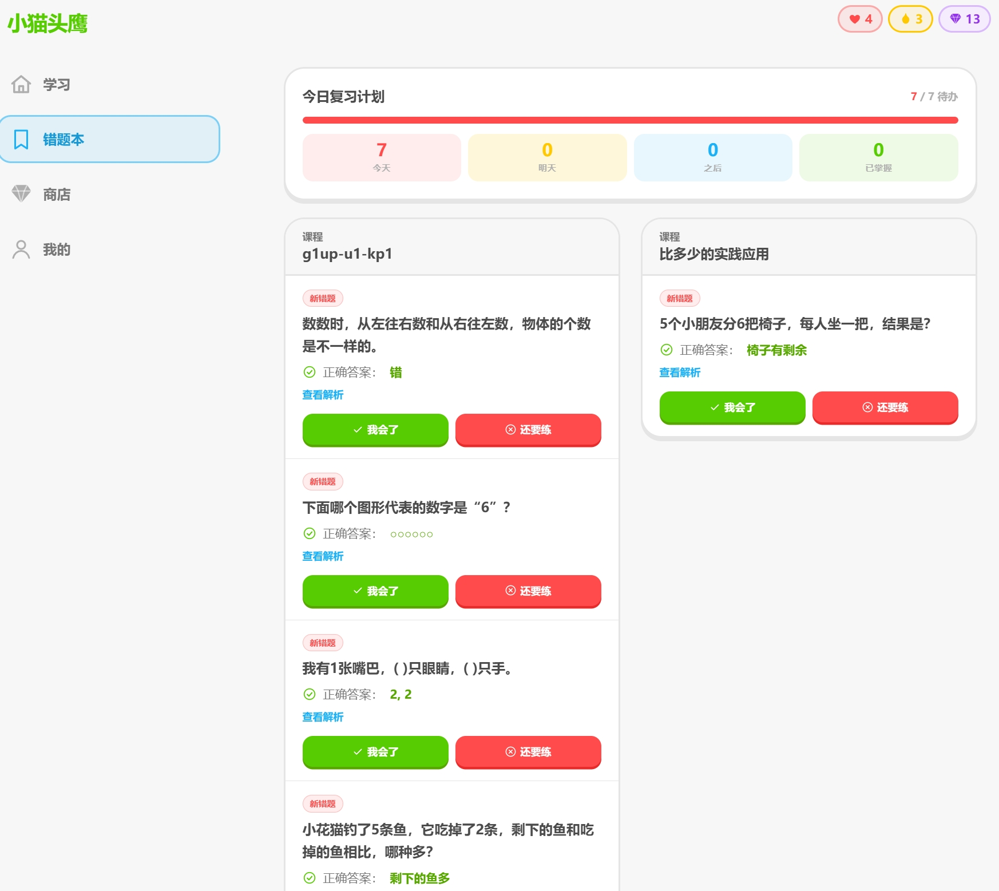
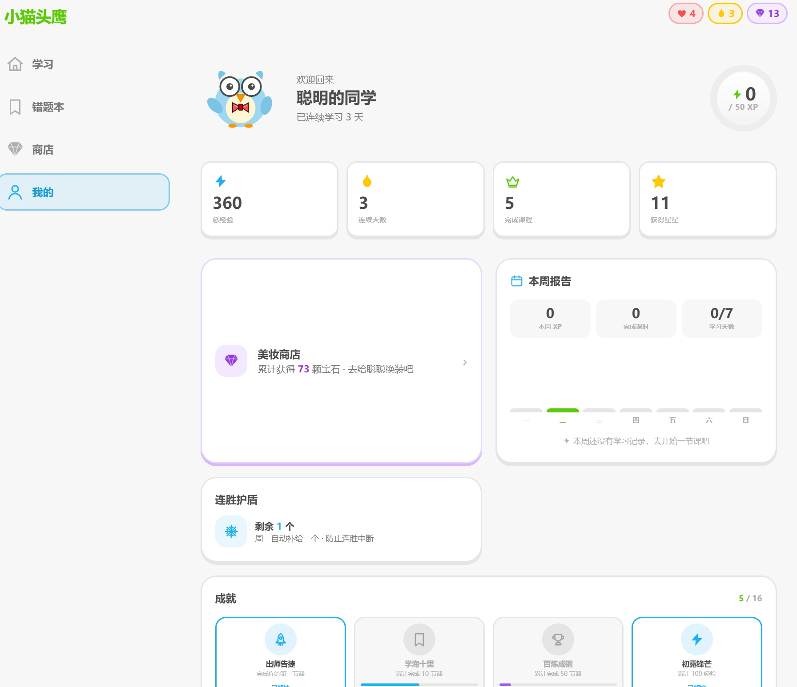
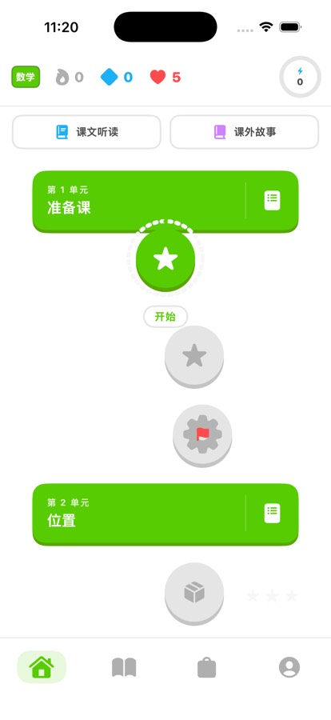
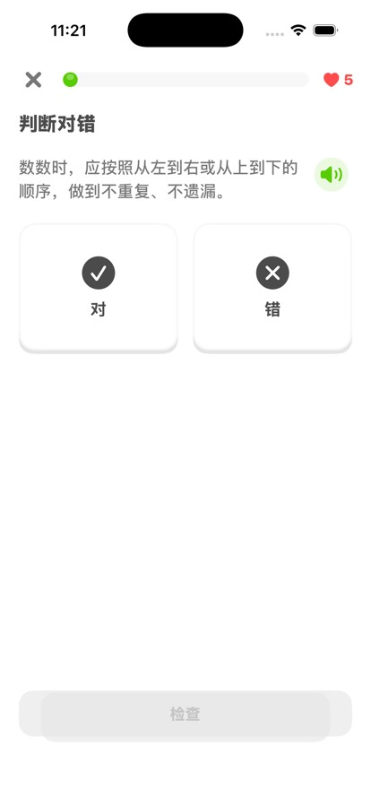
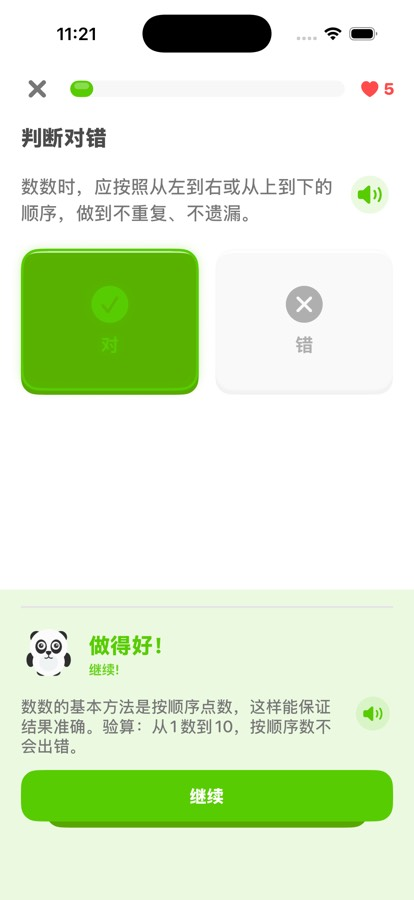
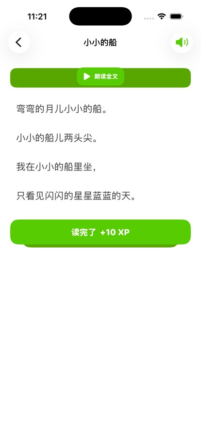
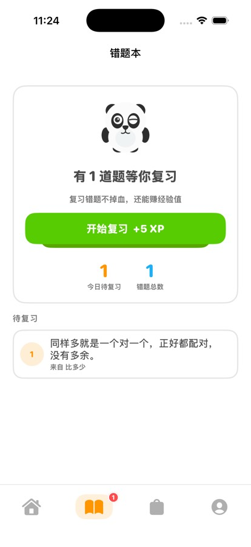
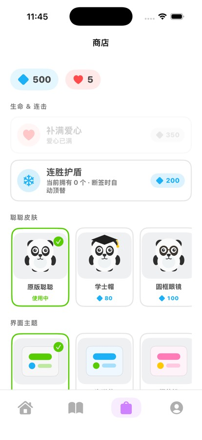
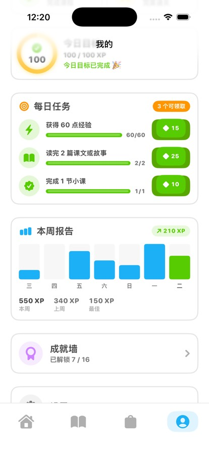
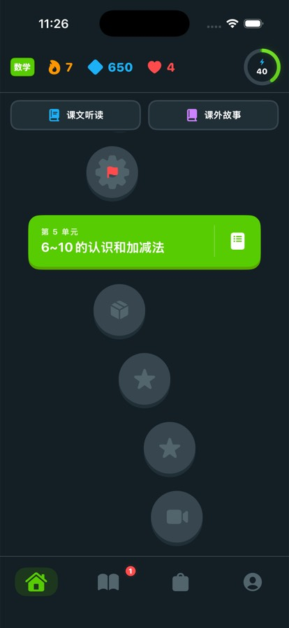
域逻辑（判分 / SRS / 成就 / 宝箱）在 Web 与 iOS 之间共用同一套设计令牌。
已部署 HTTPS 静态站点（东京 S3 + CloudFront），电脑和手机浏览器直接打开即可，无需安装。
SwiftUI 原生，支持 iPhone 与 iPad 分栏布局；App 内置一本数学书离线种子，断网也能体验完整流程。
加载 HTTPS 课堂的在线客户端，可用 Android Studio 打开 apps/android 构建调试 APK。
一条 docker compose up -d --build 自动下载完整资源并构建，无需自行安装 Node.js、Python、FFmpeg。
需要 Node.js 20+、Python 3.9+，以及带 libmp3lame 的 FFmpeg（请加入系统 PATH）。
拉取当前线上版本分支 main。
git clone --branch main https://github.com/wuwangzhang1216/ChinaTextbookStudyFree.git
cd ChinaTextbookStudyFree音频、配图、课本原页与题库通过 GitHub Release 分发（约 2.06 GB），脚本会校验 SHA-256 后解压。
# macOS / Linux
python3 scripts/install-release.py --tag v1.2.0-assets
# Windows PowerShell
py -3 scripts/install-release.py --tag v1.2.0-assets首次启动会构建数据，并从原音频生成 Web 兼容 MP3，之后启动复用校验缓存。
npm ci
npm run dev
# 打开 http://localhost:3000生产构建执行 npm run build，静态站点输出到 apps/web/out/，部署静态文件即可，不需要业务后端。